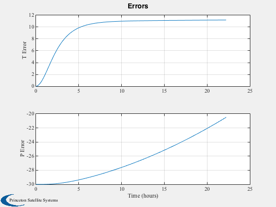
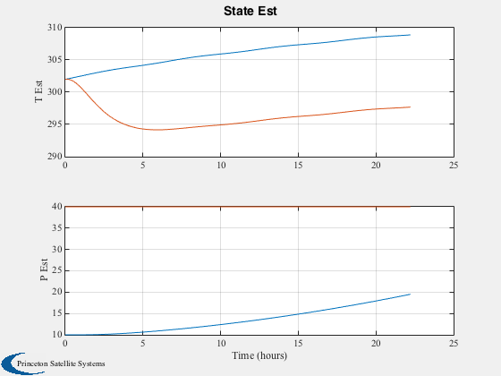

Estimate temperature and external flux using a UKF.
------------------------------------------------------------------------
See also Plot2D, TimeGUI, TimeLabl, RK4, Date2JD, GXUKF,
RHSIsothermalPState, UKF, UKUDF, RVFromKepler, RHSIsothermal
------------------------------------------------------------------------
Contents
Global for the time GUI
global simulationAction
simulationAction = ' ';
Select the filter
filter = @UKF;
Select the set to estimate
n = 4000;
nP = 200;
dT = 20;
dK = n/nP;
Thermal parameters
aR = 2;
aS = 2;
alpha = 0.3;
epsR = 0.9;
cP = 900;
m = 1000;
[a i W w e M]
el = [42167 0 0 0 0 0];
mCP = m*cP;
d = struct;
d.a1 = epsR*aR/mCP;
d.a2 = alpha*aS/mCP;
d.a3 = 1/mCP;
d.a4 = 0;
d.jD0 = Date2JD([2007 12 20 0 0 ]);
t = (0:(n-1))*dT;
Starting temperature
x = 302;
Estimation parameters
u = struct;
u.x = [x;10];
u.rHSFun = @RHSIsothermalPState;
u.measFun = @GXUKF;
u.measFunData = 1;
u.alpha = 1e-3;
u.kappa = 0;
u.beta = 2;
u.dT = dT;
u.rHSFunData = d;
u.rM = 1e7;
u.dY = 1;
u.rP = diag([1e2 1e2]);
u.p = diag([1 160000]);
u.sigmaPtAlg = 2;
u = filter('initialize', u );
Orbit
rECI = RVFromKepler( el, t );
Internal power
a = linspace(0,8*pi,n);
p = 80*(1 + 0.2*sin(a));
pDelta = 40;
xPlot = zeros(3,nP);
j = 0;
kP = 1;
[ rRT, tToGoMem ] = TimeGUI( n, 0, [], 0, dT, 'IsothermalUKFState' );
for k = 1:n
d.p = p(k) + pDelta;
d.rECI = rECI(:,k);
if( k == kP )
j = j + 1;
kP = kP + dK;
xPlot(:,j) = [x;u.x];
end
x = RK4( @RHSIsothermal, x, dT, t(k), d );
u.t = t(k);
u.rHSFunData.rECI = rECI(:,k);
u.rHSFunData.p = p(k);
u = filter( 'update', u, x(1));
[ rRT, tToGoMem ] = TimeGUI( n, k, tToGoMem, rRT, dT );
switch simulationAction
case 'pause'
pause
simulationAction = ' ';
case 'stop'
return;
case 'plot'
break;
end
end
TimeGUI( 'close' )
t = linspace(0,n*dT,j);
xPlot = xPlot(:,1:j);
[t, tL] = TimeLabl( t );
yL = {'T Error' 'P Error'};
Plot2D( t, [xPlot(1,:) - xPlot(2,:);xPlot(3,:) - pDelta], tL, yL, 'Errors');
yL = {'T Est' 'P Est'};
Plot2D( t, [xPlot;pDelta*ones(1,length(t))], tL, yL, 'State Est', 'lin',{'[1 2]' '[3 4]'} );
 